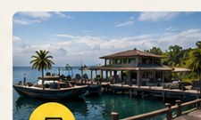

Annonce officielle
Les actualités arrivent bientôt
Retrouvez ici les annonces et informations publiées par l’administration.
Une île, un peuple, un avenir.
Découvrez l’histoire, les actualités et les services publics de Cayo Perico, une île au cœur des Caraïbes, entre traditions, culture et développement.
Découvrir l’île →Bienvenue sur Cayo Perico. Découvrez notre île, ses atouts et ses projets.
➜Plongez dans l’histoire de Cayo Perico, de ses origines à aujourd’hui.
➜
Restez informé des nouvelles, événements et annonces officielles.
➜Les démarches et informations utiles pour vos projets du quotidien.
➜Une question ou une demande ? L’équipe du portail vous écoute.
➜Retrouvez ici les annonces et informations publiées par l’administration.
Les événements seront présentés ici dès leur publication officielle.
Un espace dédié aux projets, initiatives et informations publiques.
Les cartes ci-dessus sont des exemples de présentation. Remplacez-les par les annonces validées par l’administration avant publication.
Une rubrique pour raconter les grandes étapes, les traditions et les évolutions de l’île.
Présentez ici les origines de l’île, ses premiers habitants et les récits fondateurs retenus par votre administration.
Retracez les étapes importantes de l’organisation du territoire et de la création des institutions.
Présentez la société actuelle, les projets collectifs et les ambitions pour les années à venir.
Textes de démonstration à personnaliser : ils ne constituent pas une chronologie historique vérifiée.
Accédez aux principales administrations et retrouvez les informations pratiques lorsqu’elles sont disponibles.
Pour transmettre une demande à l’administration de Cayo Perico, remplissez le formulaire ci-dessous.
Utilisez ce formulaire pour envoyer votre demande. Les messages transmis sont enregistrés dans le registre de contact de l’administration.
Les champs sont affichés directement sur cette page pour faciliter l’envoi.